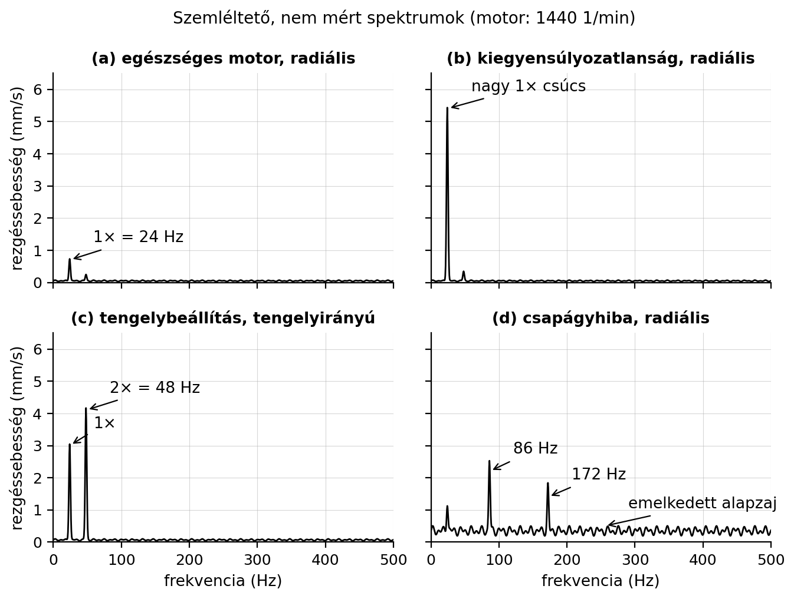
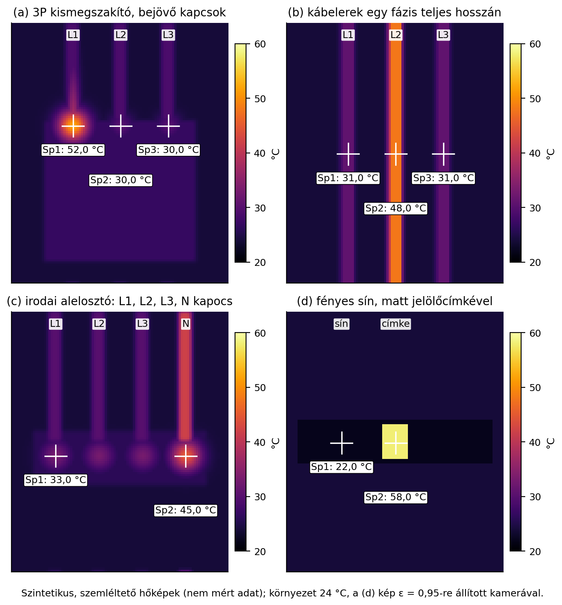

Egy üzemben a szivattyúmotor évente kétszer váratlanul leáll, mert a csapágy kopása csak akkor derül ki, amikor a gép már „beesik”. Az elosztóban egy sorkapocs meglazul, melegszik, a szigetelés elfeketedik, de senki sem nézte meg, mert „amíg megy, nem nyúlunk hozzá”. A karbantartási terv nélküli üzemeltetés nem takarékos: a váratlan leállás drágább, mint a tervszerű ellenőrzés, és a hibás szerelvény életveszélyes is lehet.
Ebben az alfejezetben megtanulod, hogyan készíts karbantartási tervet egy motorhoz és egy elosztóhoz, hogyan határozd meg az ellenőrzési gyakoriságot, és hogyan értelmezd a rezgés-, hő- és áramfelvétel-méréseket. A cél nem az, hogy felesleges munkát végezz, hanem hogy a meghibásodást időben előre jelezd.
A csapágykopás nem egyik napról a másikra alakul ki. A rezgéssebesség mérése megmutatja a folyamatot. Az alábbi ábra egy képzeletbeli motor rezgéssebességének alakulását mutatja 4 hónapon keresztül:
Az ábra azt mutatja, hogy a rezgéssebesség lassan, de folyamatosan nő. Ha csak egyszer mérnél, 3,4 mm/s értéket látsz, ami még nem feltétlenül vészes; de a trend az, ami alapján dönteni lehet. A karbantartási terv ilyen idősorokat gyűjt, és akkor avatkozik be, amikor a görbe emelkedni kezd – nem akkor, amikor a gép már leáll.
A kopás azonban gyakran nem egyenletes, hanem gyorsul. Az alábbi ábra ugyanarra az adatsorra két modellt illeszt: a lineáris (0,625 mm/s havonta) szerint a 7,1 mm/s-os beavatkozási határt a 4. hónaptól számítva kb. 5,9 hónap múlva éri el a gép, az exponenciális (, az első és az utolsó mérésre illesztve) szerint már kb. 2,2 hónap múlva. A két becslés között közel négy hónap a különbség – egy tervezett leállás időpontja múlhat rajta. Ezért a döntés mindig a pesszimistább (rövidebb) becslést kövesse, és a mérést sűrítsd, amíg a trend alakja tisztázódik.
Melyik modellt választanád, ha a havi növekmények 0,5; 0,6; 0,7; 0,7 mm/s – és miért? A HTML-kiadásban a gyakorló új adatsorokat ad (lineárisan vagy gyorsulva növekvőt): beírod a határ elérésének idejét (±0,3 hónap tűréssel), és döntesz a teendőről; ha gyorsuló sorra lineáris becslést adsz, a lap figyelmeztet. A nyomtatott kiadásban a feladatgyűjtemény 30.3 szakaszának rögzített feladatsora gyakoroltat.
A karbantartásnak alapvetően három megközelítése van (javító, megelőző, állapotalapú); az állapotalapú finomítása az előrejelző karbantartás. A gyakorlatban ezeket kombináljuk.
Definíció. - Javító karbantartás: akkor cselekszünk, amikor a hiba már bekövetkezett. Előnye, hogy nincs időszakos költség; hátránya, hogy a váratlan leállás drága, sőt veszélyes is lehet. - Megelőző karbantartás: tervszerűen, előre rögzített időközönként vagy üzemóra alapján elvégzett feladatok (kenés, tisztítás, szigetelésmérés, kötések utánhúzása, csapágycsere). Célja, hogy a beavatkozás a meghibásodás előtt történjen. - Állapotalapú karbantartás: mérésekkel (rezgés, hőmérséklet, áramfelvétel, szigetelési ellenállás) figyeljük a gép állapotát, és akkor avatkozunk be, ha a mért érték romló tendenciát mutat. Ez a korszerű megoldás, de megfelelő mérőműszert és értékelést igényel. - Előrejelző karbantartás: az állapotalapú karbantartás finomítása, amikor a trend alapján megbecsüljük a hátralévő élettartamot.
Szabály. A karbantartási terv akkor jó, ha: - a gyártói utasításokból indul ki, - az üzemi környezetet is figyelembe veszi (por, nedvesség, hő, rezgés), - a kritikus gépeket gyakrabban ellenőrzi, mint a kevésbé fontosakat, - minden feladatnak felelőse és határideje van, - minden mérést és beavatkozást dokumentál.
Definíció. A karbantartási terv egy táblázat vagy rövid dokumentum, amely felsorolja: - a berendezés azonosítását (pl. M1 szivattyúmotor, EL-01 főelosztó), - a karbantartási feladatokat (szemrevételezés, mérés, kenés, csere, tisztítás), - a feladat gyakoriságát (heti, havi, féléves, éves), - a felelős személyt, - a szükséges eszközöket és anyagokat, - az elfogadási határokat (pl. szigetelési ellenállás ≥ 1 MΩ, rezgéssebesség < 4,5 mm/s – ellenőrizendő: a pontos határ a gyártó/szabvány szerint), - a következő esedékességet.
Karbantartási napló. A napló a végrehajtott munkák és mért értékek időrendi gyűjteménye. Bejegyzései legalább: - dátum, üzemóra-állás, - elvégzett feladat, - mért értékek (pl. szigetelési ellenállás, rezgéssebesség, hőmérséklet, áramfelvétel), - cserélt alkatrész, anyagfelhasználás, - az eredmény értékelése (elfogadható / figyelmeztető / nem megfelelő), - a következő ellenőrzés időpontja, - a karbantartó neve és aláírása.
Kritikussági besorolás (szemléltető): A – a leállás termelést vagy biztonságot állít meg (például tűzivíz- vagy fő szivattyú): az állapotmérések havonta; B – fontos, de van tartalék: negyedévente; C – nem kritikus: félévente. A példa egy A kritikusságú, 5,5 kW-os szivattyúmotorra (M1, = 11,2 A) és egy üzemi elosztóra (EL-01) készült. Minden határ ellenőrizendő (gyártói adat, ISO 20816, MSZ HD 60364-6, üzemeltetői előírás). A terv egyetlen táblázat, nyomtatásban az azonosító szerint két részre bontva. Üres terv- és naplólap: Nyomtatható jegyzőkönyvek és sablonok, B6.
| Azon. | Feladat | Módszer, eszköz | Gyakoriság |
|---|---|---|---|
| M1-01 | szemrevételezés | szem, fül, szag | havonta |
| M1-02 | rezgéssebesség, D és N pajzs, V/H/A | rezgésmérő | havonta |
| M1-03 | csapágyhőmérséklet | IR-hőmérő | havonta |
| M1-04 | fázisáramok | lakatfogó | havonta |
| M1-05 | kapocsdoboz kötései | hőkamera | negyedévente |
| M1-06 | szigetelési ellenállás (leválasztva) | 500 V DC mérő | félévente |
| M1-07 | csapágy utánkenése | zsírzóprés | gyártó szerint, pl. 4000 h |
| M1-08 | tengelybeállítás | mérőóra, lézer | évente és csere után |
| EL-01-01 | szemrevételezés | szem, szag | havonta |
| EL-01-02 | hőkamerás vizsgálat terhelés alatt | hőkamera | negyedévente |
| EL-01-03 | kötések nyomatéka (leválasztva) | nyomatékkulcs | évente |
| EL-01-04 | áram-védőkapcsoló próbagomb | próbagomb | üzemeltetői és gyártói előírás szerint |
| EL-01-05 | áram-védőkapcsoló kioldásmérése | FI-mérő | felülvizsgálati ciklus |
| EL-01-06 | tisztítás (leválasztva) | porszívó, rongy | évente |
| Azon. | Elfogadási határ | Felelős | Dokumentum | Következő |
|---|---|---|---|---|
| M1-01 | nincs rendellenes zaj, szag, szivárgás | villanyszerelő | napló | 2026.06. |
| M1-02 | < 1,8 mm/s jó; 1,8–4,5 figyelés; > 4,5 beavatkozás (kis gép, merev alap) | karbantartó | napló | 2026.06. |
| M1-03 | ≤ 40 K | karbantartó | napló | 2026.06. |
| M1-04 | ≤ 11,2 A; aszimmetria < 10 % | villanyszerelő | napló | 2026.06. |
| M1-05 | a hasonló kapcsokhoz < 10 K | villanyszerelő | napló, hőkép | 2026.07. |
| M1-06 | ≥ 1 MΩ; trend 40 °C-ra számítva | villanyszerelő | jegyzőkönyv | 2026.07. |
| M1-07 | gyártói mennyiség (g) és zsírtípus | karbantartó | napló | üzemóra szerint |
| M1-08 | gyártói tűrés | karbantartó | jegyzőkönyv | 2027.01. |
| EL-01-01 | sérülés, elszíneződés nincs | villanyszerelő | napló | 2026.06. |
| EL-01-02 | a hasonló kapcsokhoz < 10 K | villanyszerelő | napló, hőkép | 2026.07. |
| EL-01-03 | gyártói nyomaték | villanyszerelő | napló | 2027.01. |
| EL-01-04 | kiold | kijelölt személy | napló | előírás szerint |
| EL-01-05 | előírt kioldási érték és idő | felülvizsgáló | jegyzőkönyv (Védelmi mérések gyakorlata és a jegyzőkönyv kitöltése) | ciklus szerint |
| EL-01-06 | tiszta, idegen tárgy nincs | villanyszerelő | napló | 2027.01. |
Napló – M1 (havi, majd sűrített állapotmérés; szigetelés a januári féléves mérésen: 120 MΩ; példaadat)
| Dátum, óra | Feladat | Rezgés (mm/s) | (A) | (K) | Értékelés, teendő | Aláírás |
|---|---|---|---|---|---|---|
| 01.12., 12 100 h | havi mérés, szigetelés | 0,9 | 10,6 | 24 | jó (alapérték) | KP |
| 02.12., 12 820 h | havi mérés | 1,4 | 10,7 | 25 | jó | KP |
| 03.12., 13 500 h | havi mérés | 2,0 | 10,7 | 26 | 1,8 felett: figyelni | KP |
| 04.12., 14 220 h | havi mérés | 2,7 | 10,8 | 28 | figyelés, mérés sűrítése (kéthetente) | NZ |
| 04.26., 14 560 h | sűrített mérés | 3,4 | 10,8 | 29 | emelkedik; kenés ellenőrzése, csapágy beszerzése | NZ |
| 05.10., 14 890 h | sűrített mérés | 4,1 | 10,9 | 31 | tervezett csapágycsere a következő leálláskor (4,5 alatt, de gyorsan nő) | NZ |
A napló a terv M1-02, M1-03 és M1-04 sorát követi; a rezgéstrend (0,9 → 3,4 mm/s, majd 4,1 mm/s) a fejezet trendpéldája, és döntéshez vezet még a határ átlépése előtt.
Továbbvitt eredmény. A karbantartási napló vezetésének logikája, a mért értékek rögzítése és a trendek értékelése később visszatér a Védelmi mérések gyakorlata és a jegyzőkönyv kitöltése alfejezetben, mert a védelmi mérések is időszakos ciklusokat követnek; a jegyzőkönyv a karbantartási napló elektronikus rokonának tekinthető.
A korszerű karbantartás alapja a mérés. Három mennyiség gyakori:
A csapágy- és kiegyensúlyozatlansági hibák a rezgéssebesség növekedésében jelentkeznek. A mérést rezgésmérő műszerrel, a csapágyházon, több irányban (vízszintes, függőleges, tengelyirány) végezzük. Az értéket mm/s-ban (effektív érték, rms) jegyezzük fel. A határokat a géposztály és az alapozás szerint kell megállapítani; a gyakran használt ISO 10816 (újabb jelölése ISO 20816 sorozat) ajánlásokat ad (ellenőrizendő: aktuális kiadás és hazai átvétel). Például az ISO 10816-3 (ma ISO 20816-3) szerint 15–300 kW-os, rugalmas alapozású gépnél kb. 2,3 / 4,5 / 7,1 mm/s a zónahatár (jó / korlátozottan elfogadható / beavatkozás), kisebb vagy merev alapozású gépnél ennél kisebbek (ellenőrizendő: ISO 20816 vonatkozó része, gyártói adat). A fejezet példái a 4,5–7,1 mm/s figyelmeztető sávot és a 7,1 mm/s beavatkozási határt használják, ami közepes, rugalmas alapozású gépre érvényes; a kis gépekre vonatkozó szigorúbb határokat lásd a Gépek megbontása, javítása és üzembe helyezése alfejezetben, a motor elfogadási mérései között. A mindenkori gyártói adatlap az irányadó.
Az összérték (mm/s) csak azt mutatja, hogy baj lehet. Hogy mi a baj, azt a spektrum (a rezgés felbontása frekvenciák szerint) és a mérési irány segít eldönteni. Két alapérték:
| Hibatípus | Jellemző frekvencia | Irány | Egyéb jel |
|---|---|---|---|
| kiegyensúlyozatlanság | 1× | radiális | a kifutással a fordulat négyzetével arányosan csökken (merev rögzítésnél, rezonancián kívül) |
| tengelybeállítási hiba | 1× és 2× | tengelyirányban is nagy | tengelykapcsoló kopik |
| mechanikai lazulás | 1×, 2×, 3×, … sok felharmonikus | főleg függőleges | a csavar lazítására változik |
| villamos (légrés, aszimmetria) | 100 Hz () | radiális | kikapcsoláskor azonnal megszűnik |
| csapágyhiba | nem a forgási frekvencia egész többszöröse, nagyobb | radiális, a csapágyon | gyártói csapágyfrekvencia-adat; korai szakaszban burkológörbe- vagy gyorsulásmérés, zajos „alapszőnyeg” |
| szíjhiba | a forgási frekvenciánál kisebb szíjfrekvencia és többszörösei | a szíj feszítési irányában | szíj kopik, csapkod |

Értelmezési feladatok.
A melegedő csatlakozás, sorkapocs, kontaktus vagy motor tekercs a meghibásodás előjele. Hőkamerával feszültség alatt, érintés nélkül meg lehet állapítani a melegedő pontokat. A mért hőmérsékletet mindig a környezeti hőmérséklethez és a hasonló terhelésű, egészséges pontokhoz viszonyítjuk. Egy 10–15 °C hőmérséklet-különbség azonos terhelésű kapocs között már lazuló kötésre utalhat (ellenőrizendő: a gyakorlati határ a gyártói és szabványi előírásoktól függ).
A hőkép csak akkor ad megbízható eredményt, ha a mérési feltételek rendben vannak:
| ΔT a hasonló terhelésű ponthoz képest | Teendő |
|---|---|
| 1–3 K | megfigyelés, a következő vizsgálatnál ismét mérni |
| 4–15 K | javítás a következő tervezett leálláskor |
| 16–35 K (vagy a környezethez képest jelentős) | mielőbbi javítás |
| > 35 K | azonnali beavatkozás |
Az alábbi négy szintetikus hőkép (nem mért adat) a leggyakoribb helyzeteket mutatja. A színskála világossága a hőmérséklettel monoton nő, ezért fekete-fehér nyomatban is olvasható; a mérőkurzorok (Sp) értékei a képen vannak.

Értelmezési feladatok. Minden képnél add meg: a valószínű okot, a ΔT-t, a besorolást, a teendőt és a leválasztott állapotú ellenőrző mérést.
A háromfázisú motor fázisáramait lakatfogóval mérjük. Egészséges gépnél a fázisáramok közel egyenlők. Ha az aszimmetria tartósan meghaladja a 10 %-ot, akkor fáziskimaradás, tekercs- vagy csatlakozóhiba gyanúja merül fel. Az aszimmetria számítása:
ahol (az átlagtól való legnagyobb eltérés alapján, ugyanúgy, mint a Diagnosztika: szemrevételezés, mérések, hibajegyzőkönyv alfejezetben; ellenőrizendő: gyártói előírás).
Szabvány. A karbantartási tervet nem egyetlen szabvány írja elő, hanem a berendezések üzemeltetésére és a munkavédelemre vonatkozó előírások, valamint a gyártói dokumentáció együtt. A villamos elosztókra az MSZ HD 60364-6 (időszakos felülvizsgálat) és az MSZ EN 61439 (kapcsolóberendezések gyártói előírásai) ad támpontot; a gépek villamos ellenőrzésére az MSZ EN 60204-1 (gépek villamos berendezései) vonatkozik. A rezgésmérés nemzetközileg elfogadott alapelveit az ISO 10816 sorozat tartalmazza, de a konkrét határokat minden esetben a gépkönyv és az üzemeltetési feltételek szerint kell meghatározni (ellenőrizendő: aktuális szabványszámok és határértékek). A szabványok időben változnak, ezért a méretezésnél és határértéknél mindig a hatályos kiadást kell használni.
Valós eset. Egy ipari mosodában a centrifugamotor csapágya évente kétszer tönkrement. A gép leállása 2 órás termeléskiesést okozott; a sürgősségi javítás anyag- és munkadíja kb. 150 000 Ft volt (becsült érték, ellenőrizendő). A karbantartó cég bevezetett egy havi rezgésmérést: a csapágyházon mért rezgéssebesség 0,8 mm/s-ról 3 hónap alatt 4,0 mm/s-ra nőtt. A trend alapján a csapágyat tervezett leállás keretében cserélték. A csere anyagköltsége 40 000 Ft volt, a munka 2 óra (16 000 Ft). A teljes költség 56 000 Ft, és a termelés nem állt le váratlanul. A példa azt mutatja, hogy a mért trend alapján ütemezett, tervszerű csere olcsóbb és biztonságosabb, mint a javító karbantartás.
Hiba. Ha az üzemeltető „spórolásból” elhalasztja a mérést, a csapágy tönkremegy, a forgórész hozzáér az állórészhez, és a motor tekercse is károsodik. A javítás már nem 56 000 Ft, hanem 400 000 Ft, és a gép napokig áll. A karbantartás elmaradása tehát nem spórolás, hanem kockázat.
Hiba 1. Csak javító karbantartást alkalmaznak, mert „a megelőzés felesleges költség”. A váratlan leállás miatt a termeléskiesés és a sürgősségi javítás rendszerint többe kerül, mint a tervszerű ellenőrzés. Helyes gyakorlat: legalább a kritikus gépekre készíts karbantartási tervet.
Hiba 2. A mért rezgéssebességet vagy hőmérsékletet önmagában értékelik, nem a korábbi mérésekhez képest. Egy 3,4 mm/s rezgéssebesség önmagában nem feltétlenül rossz, de ha a múlt hónapban 1,0 mm/s volt, akkor a trend veszélyes. Mindig az alapértékhez és a trendhez viszonyíts.
Hiba 3. A csapágyat túlzsírozzák, mert „a több kenés jobb”. A túlzott mennyiségű zsír melegedést és tömítéskárosodást okoz, ami éppen a csapágy tönkremenetelét gyorsítja. A gyártói adagolási utasítást kell követni, és az utánkenés mennyiségét a naplóban rögzíteni (lásd „Utánkenés a gyakorlatban”).
Hiba 4. A kötések utánhúzását „érzésre” végzik, mert nincs nyomatékkulcs. A túlzott nyomaték a kapocs deformálódásához, a túl kicsi a melegedéshez vezet. A gyártói nyomatékértéket kell használni.
Gyakorlás: ennek az alfejezetnek a kidolgozott példái, gyakorlatai és megoldással ellátott feladatai az Összefoglaló feladatgyűjtemény villanyszerelő tanulóknak című kötet 30.3 szakaszában találhatók.
A karbantartási terv a biztonságos és gazdaságos üzemeltetés alapja. Megkülönböztetünk javító, megelőző és állapotalapú karbantartást; a korszerű gyakorlat a mérési eredményeken alapuló, trendkövető módszert részesíti előnyben. A motoroknál a rezgéssebesség, a hőmérséklet és a fázisáram-aszimmetria; az elosztóknál a kapcsok hőmérséklete, a szigetelési ellenállás és a kötések nyomatéka a legfontosabb jellemző. Az aszimmetriát az átlagtól való legnagyobb eltéréssel számítjuk: (ugyanúgy, mint a Diagnosztika: szemrevételezés, mérések, hibajegyzőkönyv alfejezetben). A karbantartási napló rögzíti a mért értékeket, a beavatkozásokat és a következő esedékességet; enélkül nincs trend, és a döntések vakon születnek. A tervszerű ellenőrzés költsége általában lényegesen kisebb, mint a váratlan leállásé. Továbbvitt eredmény. A mért értékek rögzítésének és a trendek értékelésének módszere visszatér a Védelmi mérések gyakorlata és a jegyzőkönyv kitöltése alfejezetben, ahol a védelmi mérések is időszakos ciklusokat követnek; a karbantartási terv logikája a vizsgafelkészülés komplex feladataiban is hasznosítható. A határértékeket mindig a hatályos szabvány és a gyártói adatlap szerint kell ellenőrizni.